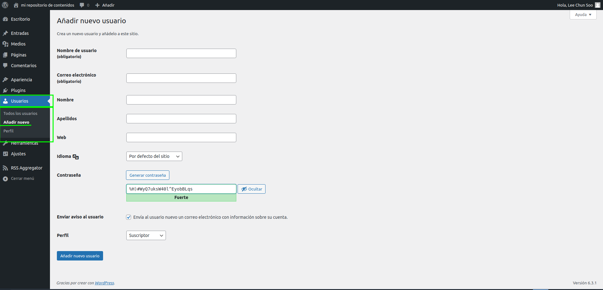
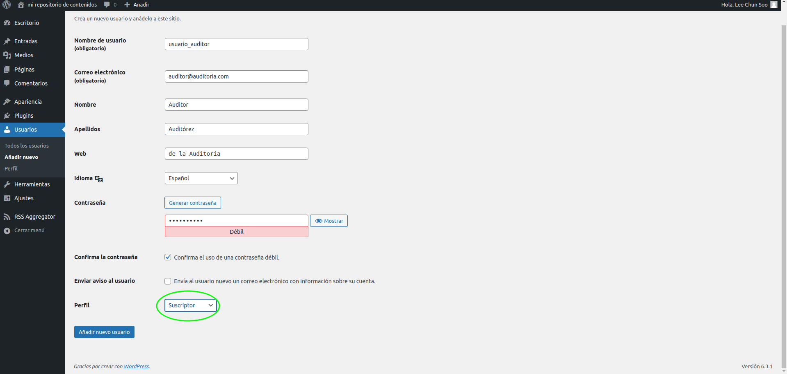
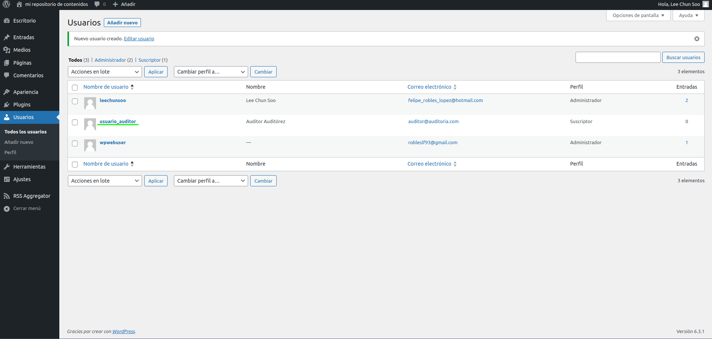
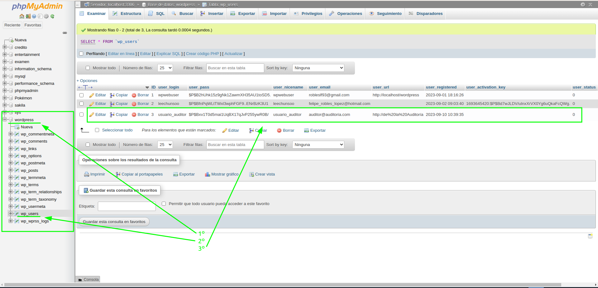

1) Crea un nuevo usuario en tu sistema Wordpress cuya única finalidad sea la auditoría y control del del CMS. Realiza las capturas de pantalla tanto del area de usuarios como de la base datos en las que se evidencie este nuevo usuario (3 ptos)
Lo primero que haremos será dirigirnos al panel de administración de nuestro repositorio; por lo general, si estás trabajando en tu servidor local, la url suele ser http://localhost/wordpress/wp-admin.
Una vez dentro, en el panel lateral izquierdo seleccionaremos la pestaña Usuarios, y a continuación elegiremos la opción Añadir nuevo.S
Una vez dentro será cuestión de rellenar los datos. Hay que prestar especial importancia a la opción Perfil. De momento vamos a seleccionar el perfil más restrictivo y con menos privilegios, que es Suscriptor, pero hay que tener en cuenta que así no podrá tener acceso al panel de administración, por lo que es muy posible que sea necesario el uso de un complemento de seguridad o de roles de usuario personalizados para personalizar los permisos según nuestras necesidades específicas. Estos complementos permiten crear roles personalizados con permisos específicos.
Ahora vamos a comprobar que el usuario se ha creado correctamente. Primero lo haremos en el propio WordPress. Basta con volver a la pestaña Usuarios del panel izquierdo y buscar el recién creado usuario.
Haremos la misma comprobación en la base de datos. En este caso utilizaremos phpMyAdmin, pero se puede utilizar otro software o comprobarlo desde la terminal.
2) Diseña un plan de auditoría para el CMS (7 ptos)
Objetivos
- Revisar la configuración básica de nuestro CMS.
- Detectar errores para su posterior solución.
- Impulsar el posicionamiento de nuestro CMS en los motores de búsqueda.
SEO técnico
Revisión de los Ajustes de WordPress
En el panel de admninistración de nuestro CMS en WordPress se habrán de revisar tanto el título del sitio, su descripción y el título de las URLs. Todos deben ser fácilmente leíbles e identificables con el tema de nuestro repositorio, para que los usuarios puedan localizarlos de forma fácil e intuitiva.Revisión de Plugins
Se habrán de revisar los plugins instalados, incluyendo también a los inactivos, y comprobar aquellos que tengan actualizaciones pendientes, y valorar la desinstalación de aquellos que no se están usando.
Revisión de Archivos
Se revisará especialmente:
- Sitemap.xml. Esta especie de índice del sitio web indica a los buscadores las URLs que nos interesa posicionar. Este archivo se puede crear automáticamente a través del plugin Yoast SEO activando la siguiente opción en los ajustes generales del plugin
- Robots.txt. Este archivo nos permite indicarle a los buscadores que URLs deben rastrear y cuáles no y de este modo optimizar el presupuesto de rastreo. WordPress genera de forma automática este archivo con la siguiente información: User-agent: * Disallow: /wp-admin/ Allow: /wp-admin/admin-ajax.php Y se puede editar directamente desde el editor de archivos del plugin Yoast SEO, donde podrás añadir las líneas que sean necesarias. Además, en este archivo se debe incluir el sitemap para que Google lo rastree.
Velocidad de carga
Se revisará la velocidad de carga. Para analizar este apartado se hará uso de herramientas externas como WebPageTest o Page Speed Insights, en las que se puede medir la velocidad de la web y ver los puntos que necesita mejorar.
SEO on page
En este apartado de la auditoría wordpress vamos a revisar los puntos de SEO On Page que necesitarán estar optimizados para lograr un buen posicionamiento y que se pueden trabajar desde plugins como Yoast SEO.
Indexación
En primer lugar, vamos a hablar de la indexación. Este punto se refiere a las URLs que Google incluye en su índice y muestra en las SERPs. Para conocer qué páginas de tu web se están indexando puedes buscar site: y tu URL.
Para trabajar este apartado puedes hacerlo desde la pestaña de Yoast “Apariencia en el buscador” y seleccionar los tipos de contenido que se quieren indexar (entradas, páginas, categorías, etc) Simplemente hay que marcar en cada tipo de contenido si lo queremos indexar o no.
Títulos y meta descripciones
Cada URL debe tener un título y una meta descripción únicos y que describan su contenido, ajustándose a la extensión que marca Google.Estos títulos y meta descripciones se pueden generar automáticamente siguiendo una estructura fija, pero lo ideal es optimizarlos manualmente, incluyendo su palabra clave principal y creandolos de forma atractiva para lograr un mayor CTR.
URLs amigables
Las URLs de tu sitio web deben ser simples y fáciles de leer tanto para Google como para los usuarios.
Para que una URL sea amigable no debe incluir signos extraños, ni acentos, ni numeraciones. Este elemento se puede editar al crear una nueva página en el apartado “Slug”.
Imágenes
Otro punto fundamental al realizar una auditoría wordpress son las imágenes. Contar con un sitio web con las imágenes sin optimizar afectará a la velocidad de carga y a su posicionamiento.
En este punto es importante tener en cuenta su tamaño, que se recomienda que sea inferior a 100KB, y el atributo alt, un texto que sirve para describir la imágen .
Contenido
Por último, es importante revisar los contenidos que se están trabajando en el sitio web. Para ello, se debe revisar las palabras clave que se están trabajando, asegurándose de que aparecen en número de veces significativo, revisar la estructura de encabezados (principalmente H1,H2 y H3), revisar que no haya faltas de ortografía, ni oraciones más escritas, así como el uso de negrita.